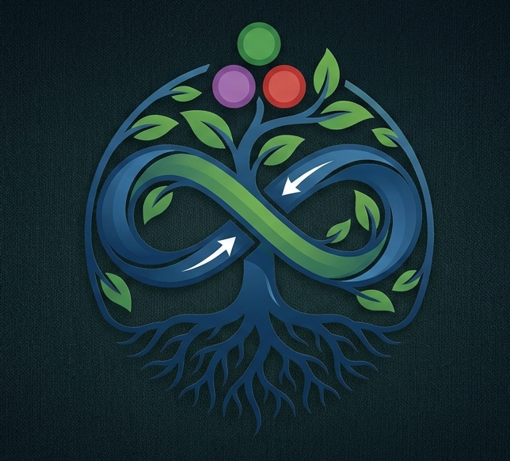
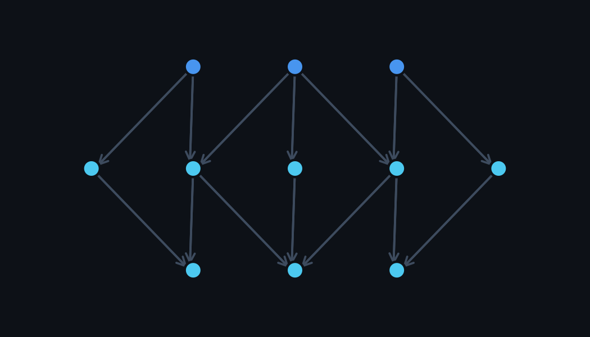
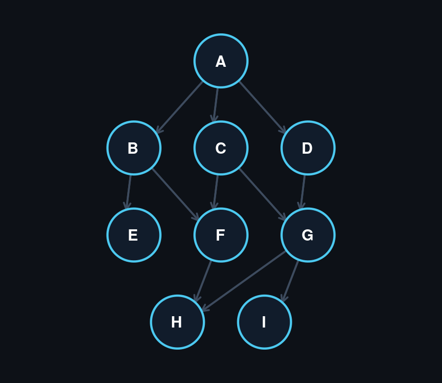
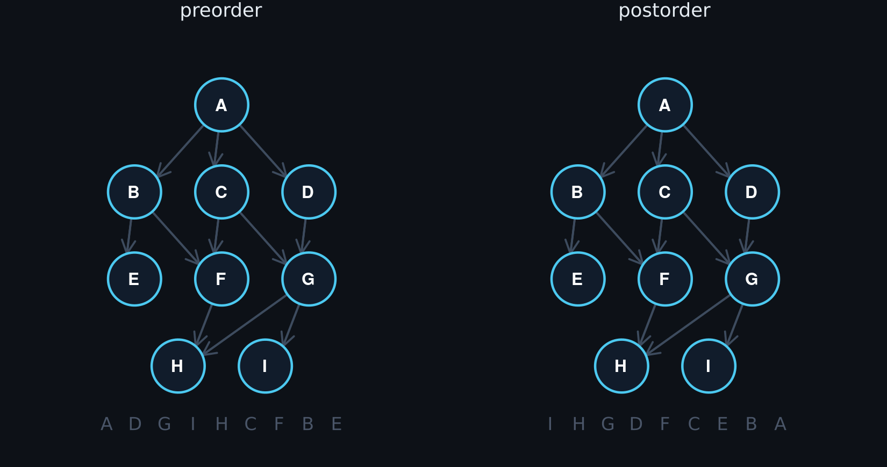
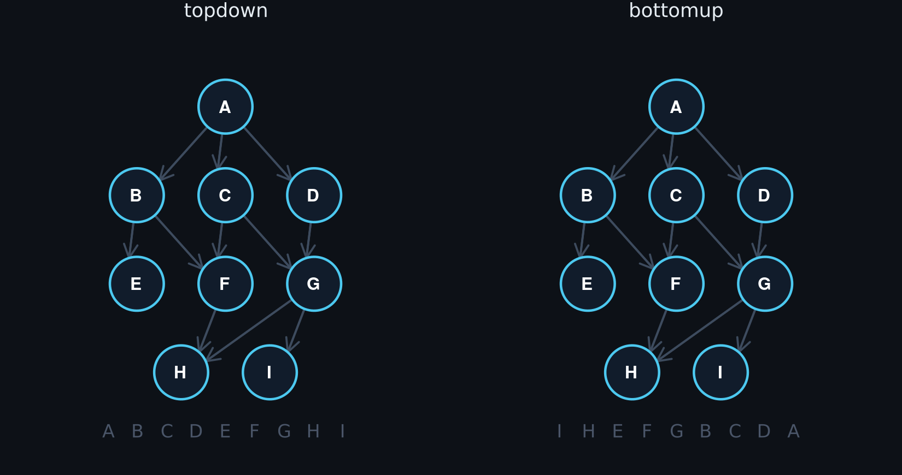
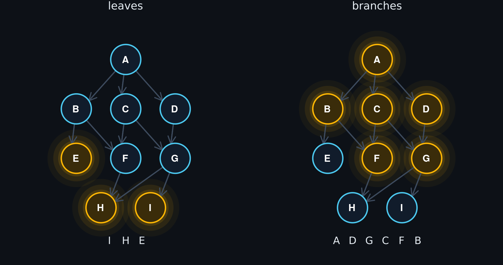

Taproots.jl
This library helps you traverse nested structs and data (including your own custom ones) in easy peasy ways! This library is inspired by AbstractTrees.jl and provides an abstract interface which you can plug into any struct and get going (you can also skip the interface and provide a function on demand).
For the purposes of this package, we'll consider any struct a taproot if:
- It has nested data which can be accessed from the struct in some way (whether by using keys or by actually holding that data – you'll provide the function to do that)
- That nested data forms a Directed Acyclic Graph (DAG) (although this package can handle cycles)
Many structures in the world form taproots:
- File and folder structures (potentially including symlinks)
- Nested data structures such as JSON, YAML, and so on. Nested Julia Dicts also do this.
- A response variable with all its causally-related covariates.
This package provides a few lightweight tools so you don't need to write custom recursions each time.
Worth a quick note that a taproot in this package is not quite as general as a DAG – with the main difference being that a taproot has only one root node, and all other nodes eventually connect to that root node. This is a key feature of this package. Instead of creating an adjacency matrix from your data and then converting that to a DAG(matrix) and then writing preorder(DAG) ... you can just preorder(your_data) right off the bat.
That being said, this API can still handle multiple root nodes. You can simply call preorder(node1, node2, node3, ...) and it will iterate through all those nodes at the same time, and (by default) only visit the overlapping nodes once.

Installation
In the Julia REPL, type ] and then add Taproots.
How to use
Turn your own struct into a taproot by telling Taproots how to find its children:
using Taproots
mutable struct MyType
some_data
children
end
Taproots.children(x::MyType) = x.children
Base.show(io::IO, x::MyType) = print(io, x.some_data)Taproots.children is a function, so you don't have to store the children: you can look them up from a key or anywhere else.
That's it. Your struct now works with (almost) everything in Taproots.jl.
Let's build a small DAG. F, G and H each have more than one parent:
H = MyType("H", []); E = MyType("E", []); I = MyType("I", [])
F = MyType("F", [H]); G = MyType("G", [H, I])
B = MyType("B", [E, F]); C = MyType("C", [F, G]); D = MyType("D", [G])
A = MyType("A", [B, C, D])
Now you might wish to traverse ALL that data in a lazy way:
for node in postorder(A)
println(node)
endOr just the things at the edges:
for node in leaves(A)
println(node)
endWalks
Every walk is a lazy iterator, so map, Iterators.filter, first and collect all work. In the animations, the amber path is the route from the root to the node being visited.
Depth-first
preorder(A) # A D G I H C F B E (parents before children)
postorder(A) # I H G D F C E B A (children before parents)
Breadth-first
topdown(A) # A B C D E F G H I (level by level, from the root)
bottomup(A) # I H E F G B C D A (every child before its parents: a topological sort)
bottomup is the one eager walk: it maps the taproot before yielding anything.
Leaves and branches
leaves(A) # I H E (nodes without children)
branches(A) # A D G C F B (nodes with children)
Leaf batches
leafbatches(A) # [I, H, E], [F, G], [B, C, D], [A]Each batch only depends on earlier batches, so the nodes inside one batch can be processed in parallel.
Shaping a walk
Every walk above takes the same keyword arguments.
How often a node is visited: pathset
preorder(A; pathset = OncePerNode) # A D G I H C F B E (the default)
preorder(A; pathset = OncePerEdge) # A D G I H C G F H B F E (once per parent)
preorder(A; pathset = NoCycles) # A D G I H C G I H F H B F H E (every path, cycles cut)
preorder(A; pathset = AllPaths) # A D G I H C G I H F H B F H E (every path)OncePerNode: each node once, however many paths lead to it.OncePerEdge: each parent-child edge once.NoCycles: every path, but never back into a node's own ancestors.AllPaths: every path. The fastest, since nothing is tracked, but it never finishes on a cyclic taproot.
Which children to follow: connector
connector(node, child) decides whether the walk steps from node into child:
preorder(A; connector = (node, child) -> child !== G) # A D C F H B Eisleaf, isbranch, leaves and branches respect the connector too.
What each step yields: eltype
Ask for Node (the default), Level (depth from the root), Trace (the child indices leading to the node), or a tuple of them:
preorder(A; eltype = (Node, Level)) # (A, 0), (D, 1), (G, 2), (I, 3), ...
preorder(A; eltype = Trace) # (), (3,), (3, 1), (3, 1, 2), ...traces(A) and tracepairs(A) are shorthands for preorder(A; eltype = Trace) and preorder(A; eltype = (Trace, Node)).
Children on demand
Pass a children function first to skip the interface entirely (or to override it for one walk):
preorder(n -> reverse(n.children), A) # A B E F H C G I DSeveral roots
preorder(B, D) # D G I H B F E (H is shared, but visited once)Interface
Taproots.children is all you need to walk. A few more functions describe your nodes:
childtype(MyType) # the eltype of children(::MyType)
childtypes(A) # a guess at the union of every node type in the taproot
ischild(H, C) # true: H is (recursively) a child of C
isparent(D, E) # false: E can't be reached from D
isleaf(E) # true: no children
isbranch(A) # true: has childrenTo modify taproots in place (with tapmap!, prune! and friends; see Extras), also define:
Taproots.data(node::MyType) = node.some_data # the data a node holds, apart from its children
Taproots.setdata!(node::MyType, data) = (node.some_data = data; node) # must return the node
Taproots.setchildren!(node::MyType, children) = (node.children = children; node) # must return the nodesetdata!(node, data(node)) and setchildren!(node, children(node)) should both leave node unchanged.
See Extras for modification, searching, built-in taproots and visualisation.